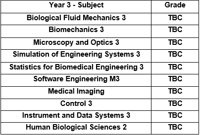
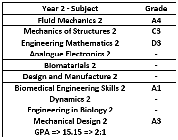
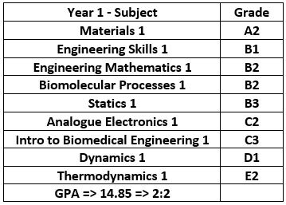
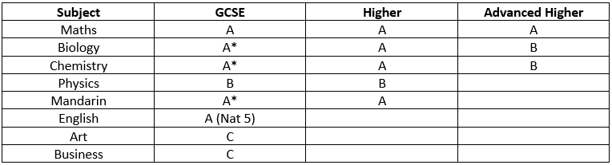

Higher Education - The University of Glasgow
Year 3
I am currently in my third year studying Biomedical Engineering, this year we are doing more biomedical engineering specific courses such as Biological Fluid Mechanics and Biomechanics. However, we are also covering general engineering topics such as Simulation of Engineering Systems in which we are learning to simulate real time engineering systems and how to use software to help us such as Matlab and Simulink.
In the year 3 table you can see what I'll be studying this year. Currently I am at the start of first semester so there is very little work to show for third year.
Year 2
In second year unfortunately all my second semester exams were cancelled due to Coronavirus and I only recieved grades for Biomedical Engineering Skills 2 and Mechanical Design. Any courses with blank grades stand for credit awarded as we were not graded. My overall GPA for the year was 15.15 which is on track for a 2:1. In mechanical design we had a large project where we had to design a bike and build it in Solidworks CAD, this included the use of other software too such as CES (Cambridge Engineering Selector) to select appropriate materials for the bike. Press here to view the project report.
In Biomedical Engineering skills we also had to come up with an innivotive designs for an inhaler which we designed in CAD, as well as research and write a short paper about the history of inhalers and how they function. You can view the paper here, and the design board here.
Year 1
In first year we mostly covered very basic engineering principles and fundamental maths. You can see my grades in the year 1 results table. My GPA for the year was 14.85 which is on track for a 2:2 or a low 2:1.
Figuring out how to balance University work, socialising and non-academic activities didn't come to me naturally but over time I managed to find a healthy balance.
Secondary Education - The Edinburgh Academy
I grew up in Edinburgh and attended the Edinburgh Academy from ages ten to eighteen, below you can see all the results I achieved at school.
